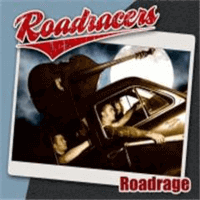

Roadracers - Roadrage (Album, 2007)
01 - No Fool (2:34)
02 - Roadrage (2:27)
03 - Believe What You Say (2:12)
04 - Trouble Hound (2:22)
05 - My Way (3:27)
06 - 8 Days On The Road (2:48)
07 - Call Me Shorty (1:51)
08 - True To You (2:45)
09 - Pistol Packin' Mama (2:01)
10 - New Shoes (2:26)
11 - Nice From Far (2:37)
12 - Rock'n'Roll Ship (2:52)
13 - This Is What I Drink (2:09)
© Goofin' Records :: [GRCD6138]
Notes
Finland.
Hannu - Vocals
Ana - Guitar
Jikku - Bass
Japi - Drums
Wiley Cousins - Piano on tracks 01, 05, 12
Masa Orpana - Saxophone on track 05
reference information: Discogs®
Review
106/366 (Project 366)
The beginning of the album is very action, heavy, powerful and wild with smooth piano sound. Twang and roaring guitars! Amazing. However, like the gnarling vocals too. "No Fool" is brightly emotional, life affirming and there are interesting musical points. I think this is a definite hit on the album. The second track "Roadrage" with rockin' and rollin' start. A small glow and storm then, though small and soft! In general, the song a bit nervously mad since of lyrics of road rage. And calms down on a clear sonorous note. A little incomprehensible sound, although focused and strict. But power remains and grows to a somewhat hard and heavy sound of "Believe What You Say". Still tempest with burning rocket guitar solo. Straightahead rhythm and invigorating melody. Although clarity remains and retains a common melody and tact. It does not go into some kind of baseless wild. "Trouble Hound" is a nice Country rockin' refreshment. Fancy rockabilly tune and not so bad. Diligent and rather smartly. A lot of emotions and indescribable impressions of a rather melodic composition and with country rockabilly mood. Then comes showy strolling ballad with use of a saxophone - "My Way".
The sixth song "8 Days On The Road" brings back the more familiar sound of the group. Interesting in something, powerful and balancing. Perhaps saturated not only with Rockabilly and Rock'N'Roll tone but also Country Rock mood. Subject, lyrics, tune. Very musically and wavy, with a calm and a surge. Using effects (like an echo) comes out very special. The next track is "Call Me Shorty" - relatively loud drums, flashy vocals, smooth guitar, tireless bass. Wildly a bit and saucy. Then peppy, simple groovy song - "True To You". Classic Rock'n'Roll with good guitar accompaniment. That is all. The seventh song is a curious cover version of "Pistol Packin' Mama". All in all, it just sounds very modern. Although it starts to strain a little the same drums, as well as "crushing" vocals with such a song. The next song "New Shoes" with shake, echo and basically corresponding to "Roadrage" song. But this song is in some ways hysterical. The eleventh song "Nice From Far" is a conceptual thing, fancy composition of a bit (neo)Rockabilly style with freaky tune. Whereas the next track "Rock 'n' Roll Ship" is a danceable tune. Jive, boogie, rockin' and rollin' with piano and straight motion. The final song of the album "This Is What I Drink" is a furious (but not really so) end of album. (neo)Rockabilly Rock 'n' Roll. Rollicking, riotous, loud, ringing, growling, rough.
Very lively music. Well suited for dancing, partying and just good rocking night. Pretty enthusiastic. The vocalist is very genuine, with a passion. In fact, punchy music and just fun! Modern way of old fashion coolness.